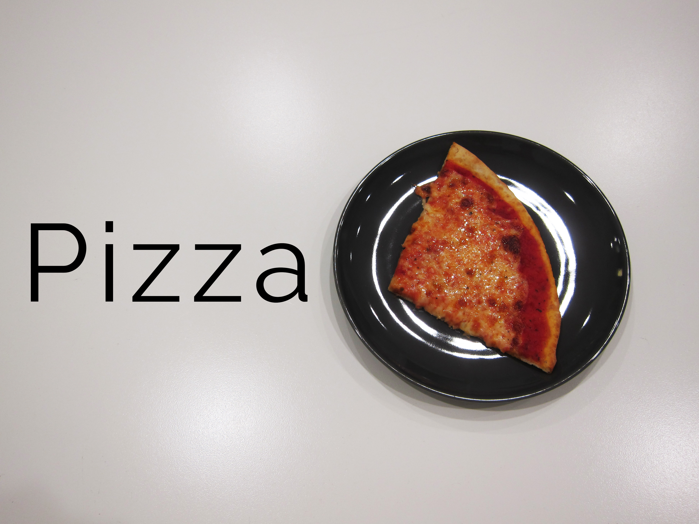
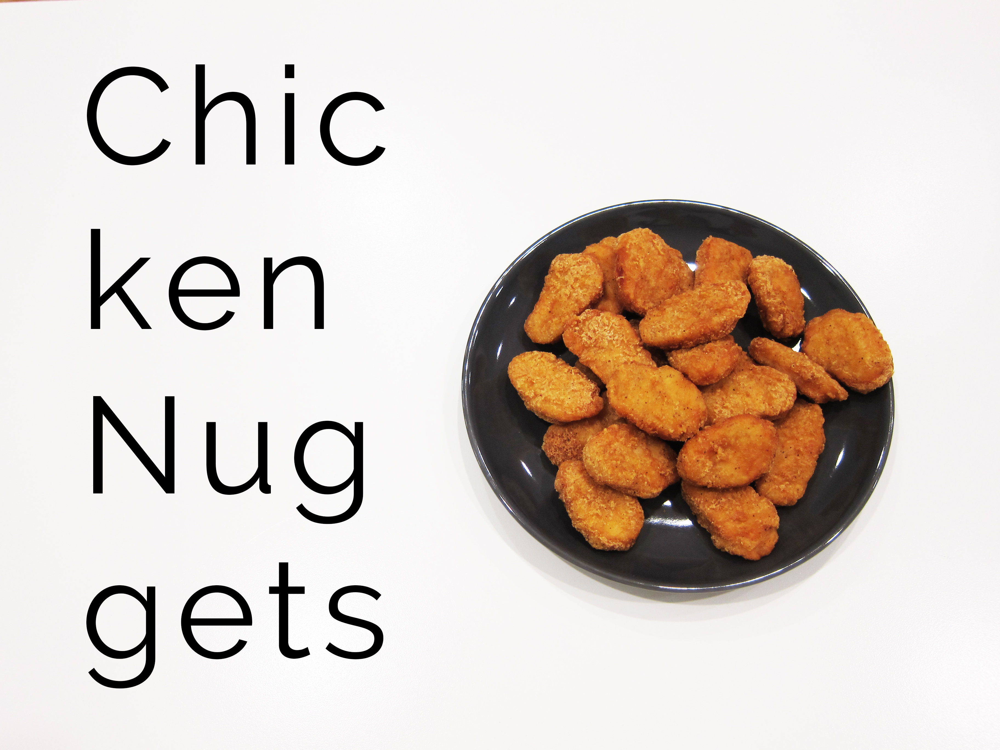
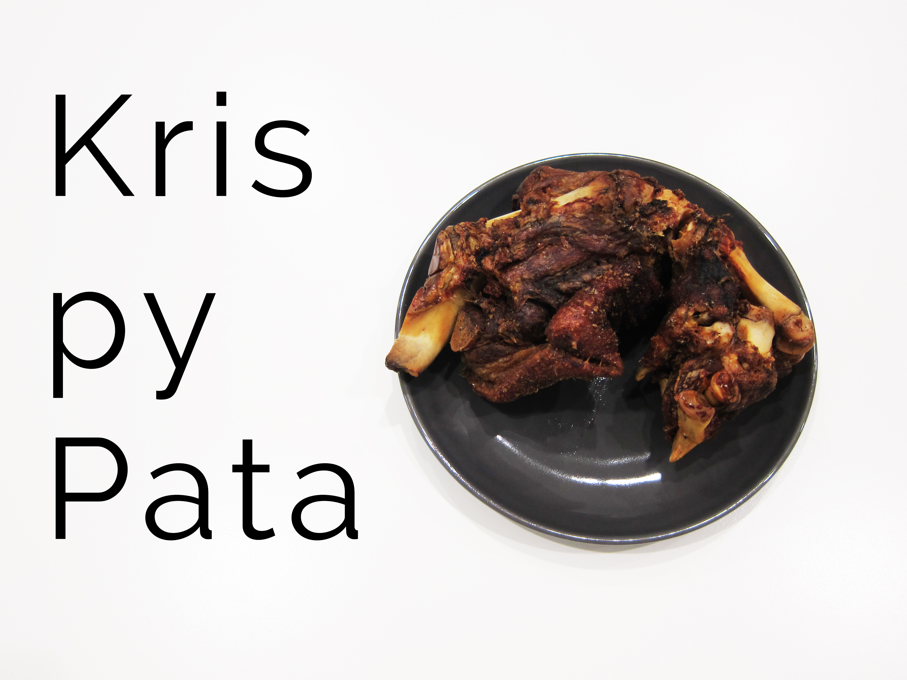

I was born in San Francisco to a Filipino family and grew up in the Philippines. From the moment I was born, the duality of those two cultures was instilled in me. Up until college, I spent most of my time in the Philippines but I would be lucky enough to visit San Francisco almost every summer to catch up with relatives on both sides of my family that live there. In many ways, I was always supposed to be part of two cultures.
For me, trying to be a part of both cultures never really bothered me to the extent that I had to choose or try to reconcile both cultures. I only started really thinking about this duality when I moved to New York and all of a sudden, I couldn't eat the food I grew up with. I would try to find Filipino restaurants and Asian groceries that sold ingredients for my favorite dishes but it just wasn't the same.
However, I also wasn't completely out of my element. I knew fried chicken, I knew pizza, steak, french fries, burgers, burritos and I knew them pretty well because those were also part of my diet growing up as it is for most kids who grow up in the US.
That imbalance of cultures, represented in their food, slowly crept up on me the longer I lived in New York. There are many American dishes I consider to be part of Filipino cuisine or at least my own personal representation of Filipino cuisine. This lead me to think about how we define cuisine and who gets to say what dish belongs in what cuisine.
So, I enlisted the help of my girlfriend, Gabrielle Yu, who has a similar background, and asked her some of the same questions that were bothering me. However, I threw in a twist. I made Gabrielle, or Gabby, try three dishes with a blindfold on and had her try to guess what the dish was and what cuisine it belonged to.
The Three Dishes
 PizzaThe dishes I chose were based on what I thought Gabby would associate to each cuisine based on her experiences. I chose pizza to represent New York and American cuisine, Krispy Pata to represent Filipino cuisine, and chicken nuggets, a staple of both cuisines.
 Chicken NuggetsThe goal for me was to have Gabby focus completely on the smell, texture, and taste of the food and to make her rethink what dish was associated with what cuisine and why. Did eating something like chicken nuggets while growing up in the Philippines make it part of Philippine cuisine? Would someone growing up in the US, eating Krispy Pata, consider that part of American cuisine?
 Krispy PataThe Video
I don't think that this exercise answerered questions about cuisine, authenticity, and who get's to decide which dish goes into which cuisine. My main takeaway from Gabby's thoughtful reflections is that cuisine is entirely subjective. There are dishes in the Philippines that originated from a country thousands of miles away and the same goes for the US. I would even argue that some of the more iconic US dishes like pizza, Chinese takeout, and french fries, were brought over by immigrants and slowly changed to suit American tastes.
The fusion of cuisines is now easier than ever. Who's to say that 50 years from now, an American's definition of American cuisine might not be all that different from a Filipino's definition of Filipino cuisine?Or is there much more to it than that?